摘要
零基础，唔，其实还是要有一些基础，好歹你要知道Git是什么，为什么要用Git，然后我来教你怎么安装Git，怎么配置Git，以及一些常见的Git命令。推荐参考书目：《Pro Git》，这书可以当字典用，哪里不会查哪里。
背景
其实我只是想写一篇《Hexo ABC》的→_→，可是想想，光讲Hexo不讲Git可怎么行，毕竟无论是Hexo工程还是最终的静态页面都是要推送到GitHub上的，何况Hexo本身也依赖GitHub。GitHub便是Git的一个远程仓库。
系统环境
Windows 10-64bit
步骤
下载Git
访问Git官网
谷歌搜索关键字git，打开Git官网如下图所示（不会翻墙的可以阅读我收集的Shadowsocks文章合集）：
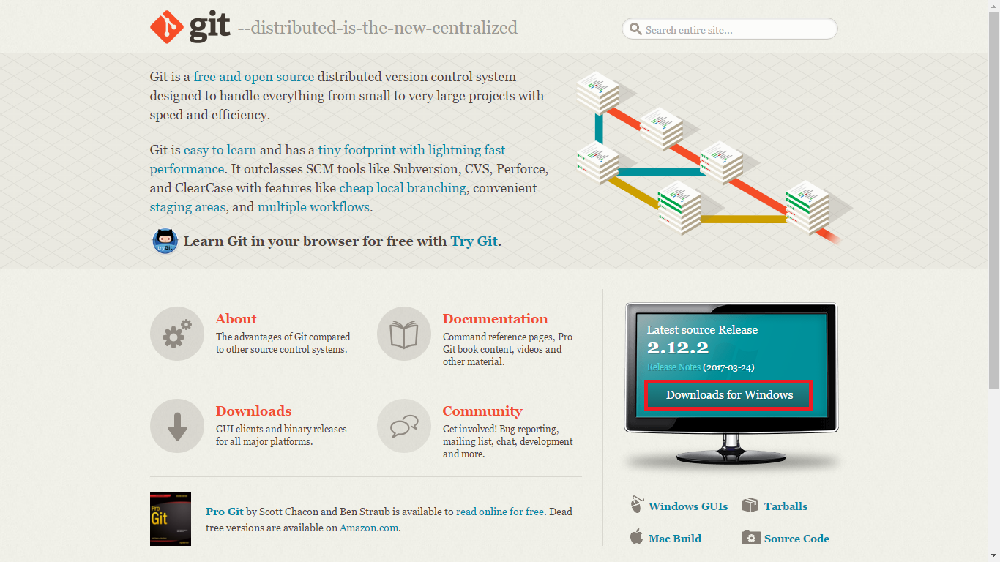
开始下载Git
点击红框中的Downloads for Windows按钮跳转到下图所示页面：
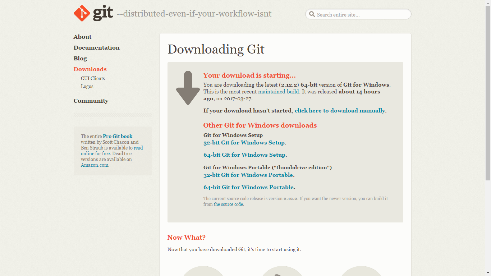等待几秒便会开始下载。
安装Git
运行Git安装程序
双击运行安装程序开始配置和安装Git（下文图中的设置项为我的个人推荐设置）。
Git软件信息
第一屏是软件信息，直接下一步：
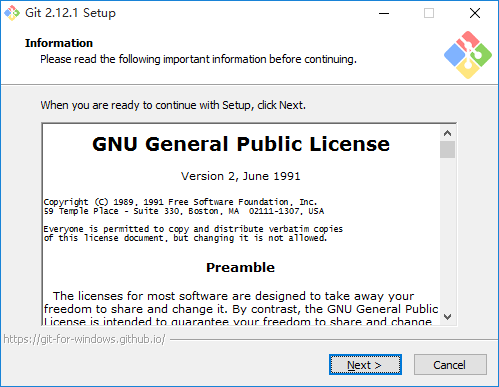
选择安装路径
选择安装路径后，下一步：
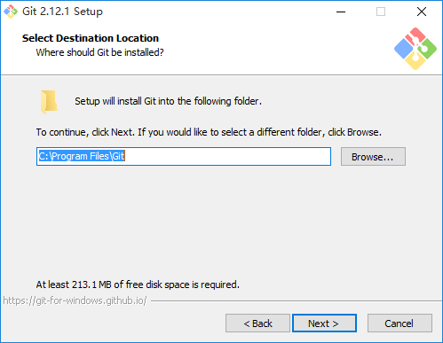
选择组件
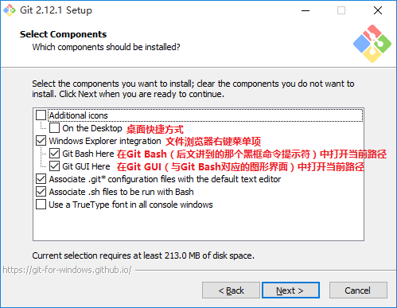
最后三个选项说明：
- 用系统默认编辑器（Windows下一般是记事本）打开文件名以
.git开头的文件； - 用Bash（Windows下一般是命令提示符）执行后缀名为
.sh的文件； - 在所有的命令提示符窗口中使用TrueType字体，包括Git Bash和系统本身的命令提示符。这个完全看个人喜好，个人感觉TrueType字体出现在系统命令提示符里面感觉怪怪的，所以我从来不勾选。
选择开始菜单目录
底部的多选框可以选择不在开始菜单创建目录：
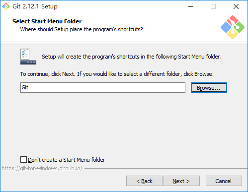
设置PATH环境变量
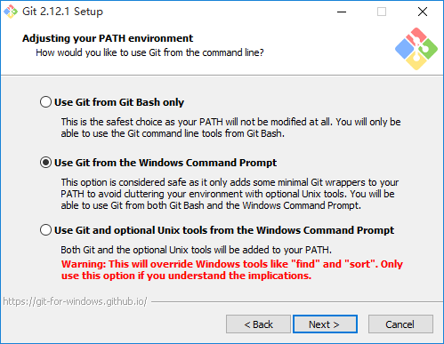
其实每个选项的下方都有详细的说明，下面只做补充说明：
- Use Git from Git Bash only
这是最保险的设置方式，这种方式不会更改系统的PATH变量值，但是同时Git相关的命令将只能在Git Bash中执行； - Use Git from the Windows Command Prompt
这种设置方式会在系统的PATH路径中添加Git命令相关的目录，具体来说，假设Git安装于上文截图中的路径，那么PATH中添加的路径就是C:\Program Files\Git\cmd。这样，Git相关的命令不仅可以在Git Bash中执行，也能在系统命令提示符中执行了； - Use Git and optional Unix tools from the Windows Command Prompt
这种设置方式不仅会往系统的PATH路径中添加Git命令相关的目录，还会添加一些Unix命令相关的目录（这些Unix命令程序是随Git一起安装在系统中的）。但是这样会有一个问题，当Windows命令和安装的Unix命令重名时，比如find和sort命令，就会优先运行Unix命令。这样日后容易引起混淆，同时也没必要。当然你确实有这需求，那当我没说。
设置SSL/TLS库
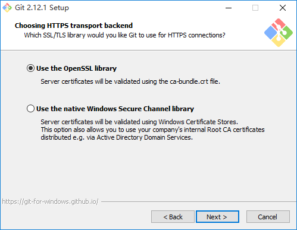
选择传输层安全协议的实现，具体的对比可以看这里，我实在找不到中文的这么完整的文档。。。反正两个随便选哪个都行。
设置换行符转换规则
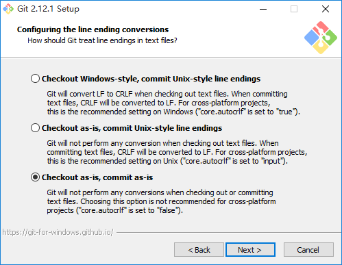
做一个小科普，在不同的系统中，比如Windows和类Unix系统中，换行符在文件中的存在形式是不一样的。虽然换行符肉眼不可见，但是是真实存在于文件之中的。在Windows中以CRLF来表示，这事实上是两个字符，一个字符叫CR（CR只是名字），代表回车（字符中的回车是指将光标移至行首），一个字符叫LF（同样只是名字），代表换行（字符中的换行是指将光标移至下一行的相同一列）；而在类Unix系统中，换行符只有LF。如果打开的文件中存在非本平台的换行符，那么最直观的现象就是，两行合为了一行。这一页的选项含义如下：
- 在checkout（一个Git术语，暂时理解为打开）文件时将文件中的LF换行符转换成CRLF，在commit（一个Git术语，暂时理解为提交）文件时将文件的CRLF换行符转换成LF；
- 在checkout文件时不作处理，在commit时将文件的CRLF换行符转换成LF；
- 在checkout和commit文件时均不作处理。
考虑到团队协作时，不同成员很有可能工作于不同的平台上，而我的编辑器一般都能自动识别正确的换行符，所以保险起见，选择第三个选项，文件中的换行符是什么样，提交的时候就让它是什么样吧。
设置Git Bash的模拟器
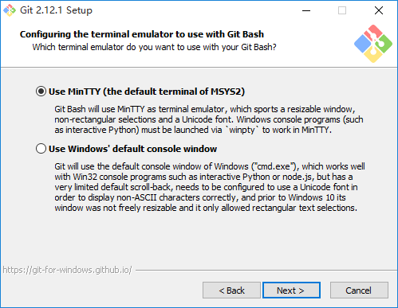
所谓模拟器，其实就是说Git Bash应该在MinTTY（一个类似于命令提示符的程序，随Git一起安装在系统中）还是在系统命令提示符中运行。主要考虑到对UTF-8编码中文显示的支持（当需要在Git Bash中diff时，diff也是一个Git术语，暂时理解为对比文件，不可避免地会遇到UTF-8编码的中文；如果路径中有中文，在执行git status时也会需要显示中文），我选择MinTTY。
其它设置项
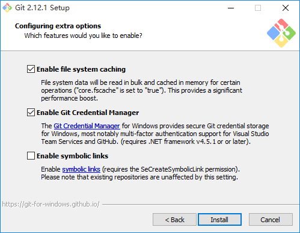
简单介绍一下三个选项的含义（不瞒你讲，这三个选项我理解得不是特别深入，不过大概知道有没有用）：
- 开启文件系统缓存后，将某些文件数据缓存在内存中以加速数据加载，显然要勾选；
- Git Credential Manager主要用于管理Visual Studio Team Services、GitHub之类的身份认证；
- 符号链接，类似于Linux软链，但是又有一些不一样，具体看这里，总之是没啥用。
开始安装
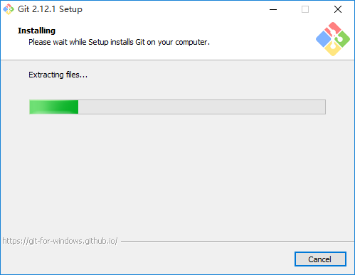
完成安装
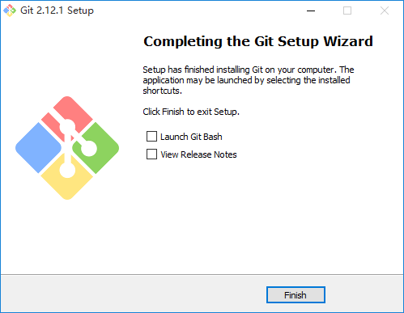
校验安装
打开命令提示符，输入以下命令：
1 | $ git version |
如果安装成功且配置正确，将返回以下信息（版本号可能会有变动）：
1 | git version 2.12.1.windows.1 |
Git的最低配置
使用Git进行工作之前，建议至少进行以下配置，以保证日后能顺利使用Git的各项功能：
1 | $ git config --global user.name "SchutzeHades" #每一次的Git提交Git记录中都会显示这个名字 |
如果想在Git操作中想要偷懒，还可以为Git命令设置别名，比如：
1 | $ git config --global alias.ci commit |
这样，日后执行git ci命令就相当于执行了git commit命令，同理，执行git co命令就相当于执行了git checkout命令。
那么问题来了，上面每一条命令都有--global，这是个什么鬼？继续引用《Pro Git》中的描述：
如果使用了
--global选项，那么该命令只需要运行一次，之后无论你在该系统上做任何事情，Git都会使用那些信息。当你想针对特定项目使用不同的用户名称与邮件地址时，可以在那个项目目录下运行没有--global选项的命令来配置。
Git使用一系列配置文件来保存你自定义的行为。它首先会查找
/etc/gitconfig文件，该文件含有系统里每位用户及他们所拥有的仓库的配置值。如果你传递--system选项给git config，它就会读写该文件。
接下来Git会查找每个用户的~/.gitconfig文件（或者~/.config/git/config文件）。你可以传递--global选项让Git读写该文件。
最后Git会查找你正在操作的版本库所对应的Git目录下的配置文件（.git/config）。这个文件中的值只对该版本库有效。
以上三个层次中每层的配置（系统、全局、本地）都会覆盖掉上一层次的配置，所以.git/config中的值会覆盖掉/etc/gitconfig中所对应的值。Git的配置文件是纯文本的，所以你可以直接手动编辑这些配置文件，输入合乎语法的值。但是运行
git config命令会更简单些。
设置完了当然要检查一番，怎么看呢？执行以下命令便会列出所有Git当时能找到的配置：
1 | $ git config --list |
你可能会看到重复的变量名，因为Git会从不同的文件中读取同一个配置（例如：/etc/gitconfig与~/.gitconfig）。这种情况下，Git会使用它找到的每一个变量的最后一个配置。
如果你只想看某个特定配置项，比如我想看我的user.name，那么就可以执行下面这个命令：
1 | $ git config user.name |
Git的SSH配置
这里有GitHub对SSH的简要说明，其中包括了SSH的简要信息、如何生成SSH key以及如何将SSH公钥设置到GitHub帐户；关于如何生成SSH key的中文版步骤，你也可以阅读本博文章《多个Git帐号自动切换》中的“生成ssh-key”一节。
Git Bash
在文件浏览器中空白处右键，选择Git Bash Here就可以看到下图所示的黑框了（当然了，开始菜单里面肯定也有相应的快捷方式），它就叫Git Bash（重点部位已打码）：
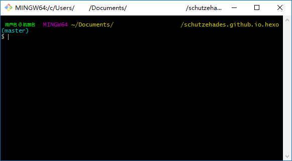
由于我们在安装时勾选了Use Git from the Windows Command Prompt，所以不仅可以在Git Bash中执行Git命令，在系统命令提示符里面同样也可以执行Git命令。但是，考虑到无处不在的中文信息，比如提交信息中的汉字、中文文件名、文件中的汉字等等，Git默认只支持UTF-8编码，而Windows的命令提示符则是GBK编码，所以还是建议在进行Git操作的时候使用Git Bash。
Git文件状态
请记住，你工作目录下的每一个文件都不外乎这两种状态：已跟踪或未跟踪。已跟踪的文件是指那些被纳入了版本控制的文件，在上一次快照中有它们的记录，在工作一段时间后，它们的状态可能处于未修改，已修改或已放入暂存区。工作目录中除已跟踪文件以外的所有其它文件都属于未跟踪文件，它们既不存在于上次快照的记录中，也没有放入暂存区。初次克隆某个仓库的时候，工作目录中的所有文件都属于已跟踪文件，并处于未修改状态。
编辑过某些文件之后，由于自上次提交后你对它们做了修改，Git将它们标记为已修改文件。我们逐步将这些修改过的文件放入暂存区，然后提交所有暂存了的修改，如此反复。所以使用Git时文件的生命周期如下：

Git命令入门
config
clone
这是从远程Git仓库（比如GitHub）中克隆档案（repository，简称repo）的命令。比如我要克隆我的GitHub Pages的repo就需要键入以下命令：
1 | $ git clone git@github.com:SchutzeHades/schutzehades.github.io.git |
P.S. 使用形如
git@xxx的SSH URL时，要求先配置好Git的SSH帐户；也可以使用HTTPS URL，但是时常需要输入用户名和密码，不推荐。
init
该命令将创建一个名为
.git的子目录，这个子目录含有你初始化的Git仓库中所有的必须文件，这些文件是Git仓库的骨干。但是，在这个时候，我们仅仅是做了一个初始化的操作，你的项目里的文件还没有被跟踪。(参见Git内部原理来了解更多关于到底.git文件夹中包含了哪些文件的信息。)
1 | $ git init |
add
这是个多功能命令：可以用它开始跟踪新文件，或者把已跟踪的文件放到暂存区，还能用于合并时把有冲突的文件标记为已解决状态等（关于Git文件状态请看这里）。将这个命令理解为“添加内容到下一次提交中”而不是“将一个文件添加到项目中”要更加合适。
1 | $ git add <file>... |
add后面可以跟一个或一串文件或文件夹名，也可以跟一个通配符。如果是文件夹的话，会递归遍例整个文件夹。
commit
现在的暂存区域已经准备妥当可以提交了。在此之前，请一定要确认还有什么修改过的或新建的文件还没有
git add过，否则提交的时候不会记录这些还没暂存起来的变化。这些修改过的文件只保留在本地磁盘。所以，每次准备提交前，先用git status看下，是不是都已暂存起来了，然后再运行提交命令git commit。
请记住，提交时记录的是放在暂存区域的快照。任何还未暂存的仍然保持已修改状态，可以在下次提交时纳入版本管理。每一次运行提交操作，都是对你项目作一次快照，以后可以回到这个状态，或者进行比较。
1 | $ git commit -m "comment" |
-m参数后面跟的是提交信息，需要由你自己填写。提交信息会记录在版本库中，这样日后可以知道这一次提交都改了些啥。每一次提交都写上提交信息是一个好习惯。
remote
这个命令很简单，文档也很简洁我就不引用了（我才不告诉你我是懒得贴），自己看去吧╮(╯▽╰)╭。
push
这个命令也很简单，文档比remote的更简单，所以我又来帮你把文档引用过来了：
当你想分享你的项目时，必须将其推送到上游。这个命令很简单：
git push [remote-name] [branch-name]。当你想要将master分支推送到origin服务器时（再次说明，克隆时通常会自动帮你设置好那两个名字），那么运行这个命令就可以将你所做的备份到服务器：
只有当你有所克隆服务器的写入权限，并且之前没有人推送过时，这条命令才能生效。当你和其他人在同一时间克隆，他们先推送到上游然后你再推送到上游，你的推送就会毫无疑问地被拒绝。你必须先将他们的工作拉取下来并将其合并进你的工作后才能推送。阅读Git分支了解如何推送到远程仓库服务器的详细信息。